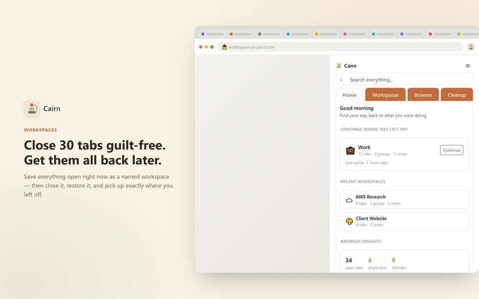
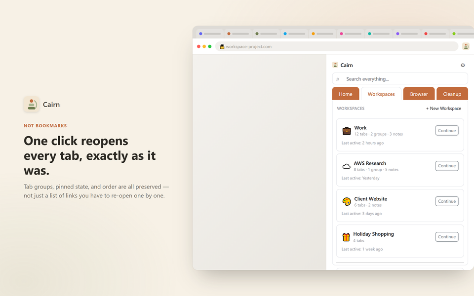
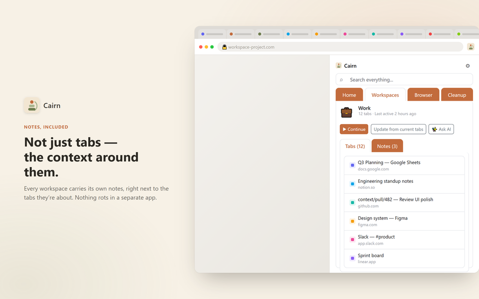
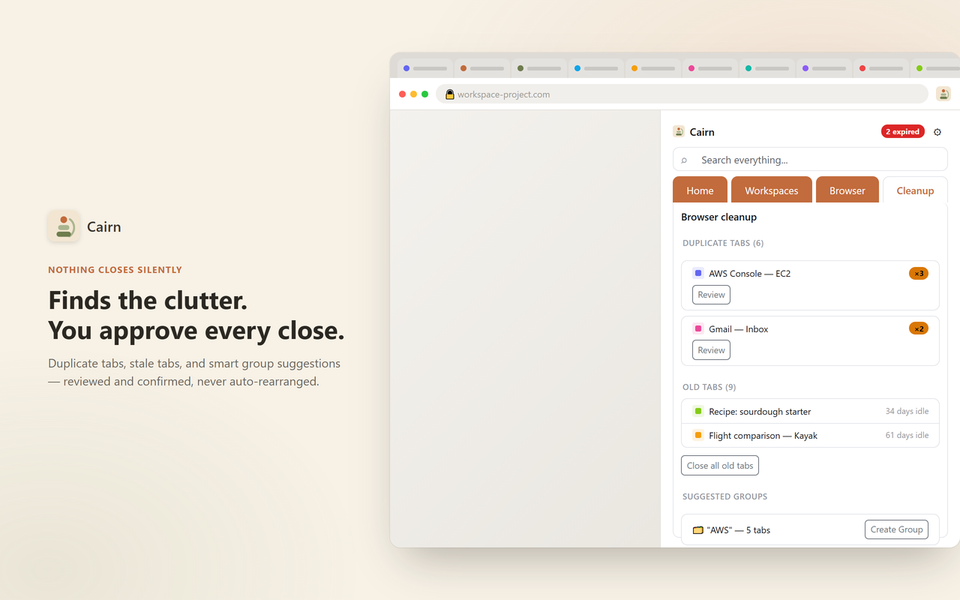
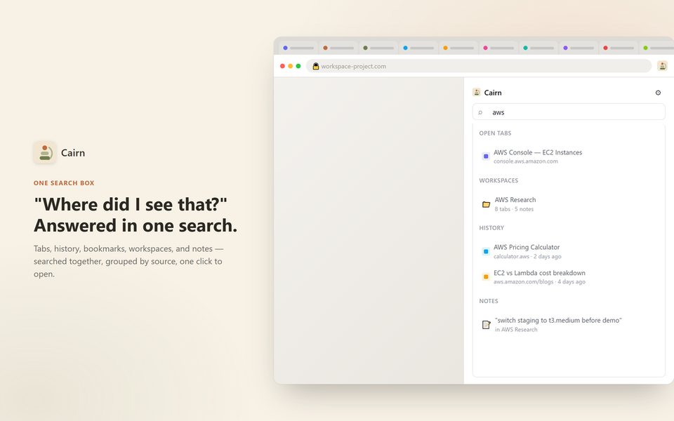

Save all your open tabs as a named workspace, close everything, and get it all back in one click. Local-first — no account, no server, no telemetry.

You have 30 tabs open and can't close them, because closing them means losing them. Cairn turns that pile into named workspaces you can put down and pick back up — close everything guilt-free, then get it all back exactly as it was.
Three steps. No account, no setup.
Name your current tabs as a workspace. Tab groups, pinned state, and order all come with it.
Close your browser, or move on to something else. Nothing is lost.
Click Continue on that workspace whenever you're ready, and every tab reopens exactly where you left off.
Tab groups, pinned state, and order are all preserved — not just a list of links you have to re-open one by one.

Every workspace carries its own notes, right next to the tabs they're about. Nothing rots in a separate app.

Duplicate tabs, stale tabs, and smart group suggestions — reviewed and confirmed, never auto-rearranged.

Tabs, history, bookmarks, workspaces, and notes — searched together, grouped by source, one click to open.

No account. No server. No telemetry of any kind.
Workspaces, notes, and settings live in Chrome's local storage on your device — nowhere else.
Searched locally to power universal search. Never collected, never transmitted.
Off by default. Shows exactly what will be sent before anything goes out, using your own API key.
Bookmarks save one link at a time and lose all arrangement. Cairn saves everything open right now — all your tabs at once, with groups, pinned state, and order preserved — restorable in one click.
That only covers the last few minutes. Cairn is named, intentional, and permanent — pick a workspace back up next week, next month, whenever.